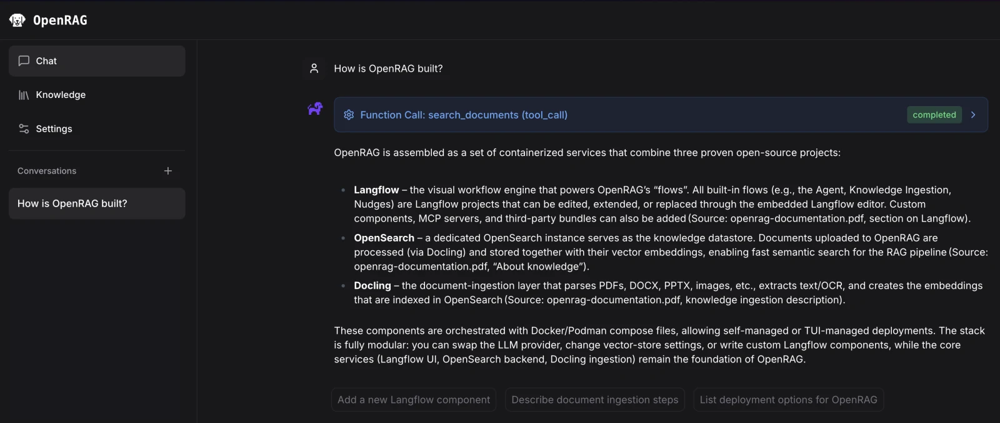

OpenRAG
Core contributor
Making retrieval work as a system.
OpenRAG connects Langflow, Docling, and OpenSearch for retrieval-augmented generation. I contribute to retrieval and orchestration, configuration, reproducible environments, and developer documentation.
My contribution
I connect core retrieval behavior with the supporting developer experience: clear configuration, maintainable patterns, build tooling, and documentation. This is contribution to a shared platform, not sole authorship.